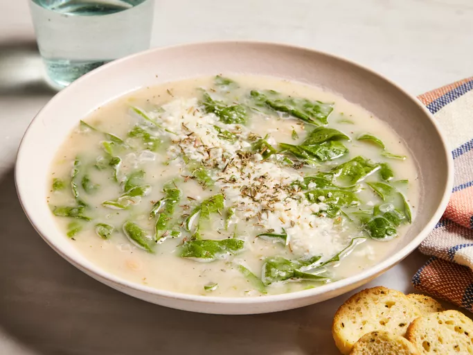

Creamy Italian White Bean Soup

Description
This hearty white bean soup is made with creamy cannellini beans and flavored with garlic and thyme. It's one of my family's favorite soups. Serve with grated Parmesan cheese.
Ingredients
- 1 tablespoon vegetable oil
- 1 onion, chopped
- 1 rib celery, chopped
- 1 clove garlic, minced
- 2 (16 ounce) cans white cannellini beans, rinsed and drained
- 1 (14 ounce) can chicken broth
- ¼ teaspoon ground black pepper
- ⅛ teaspoon dried thyme
- 2 cups water
- 1 bunch fresh spinach, rinsed and thinly sliced
- 1 tablespoon lemon juice
Steps
- Heat oil in a large soup pot over medium-low heat. Add onion and celery; cook and stir until tender, about 5 to 8 minutes. Add garlic, and cook for 30 seconds, continually stirring.
- Stir in beans, chicken broth, pepper, thyme, and 2 cups water. Bring to a boil, reduce heat, and simmer for 15 minutes.
- Use a slotted spoon to remove 2 cups of bean and vegetable mixture from soup; set aside.
- Blend remaining soup in small batches in a blender at low speed until smooth — it helps to remove the center piece of the blender lid to allow steam to escape.
- Pour blended soup back into pot; stir in reserved beans.
- Bring soup to a boil, occasionally stirring. Stir in spinach and until spinach is wilted, about 1 minute.
- Stir in lemon juice and remove from heat. Serve soup with freshly grated Parmesan cheese on top.